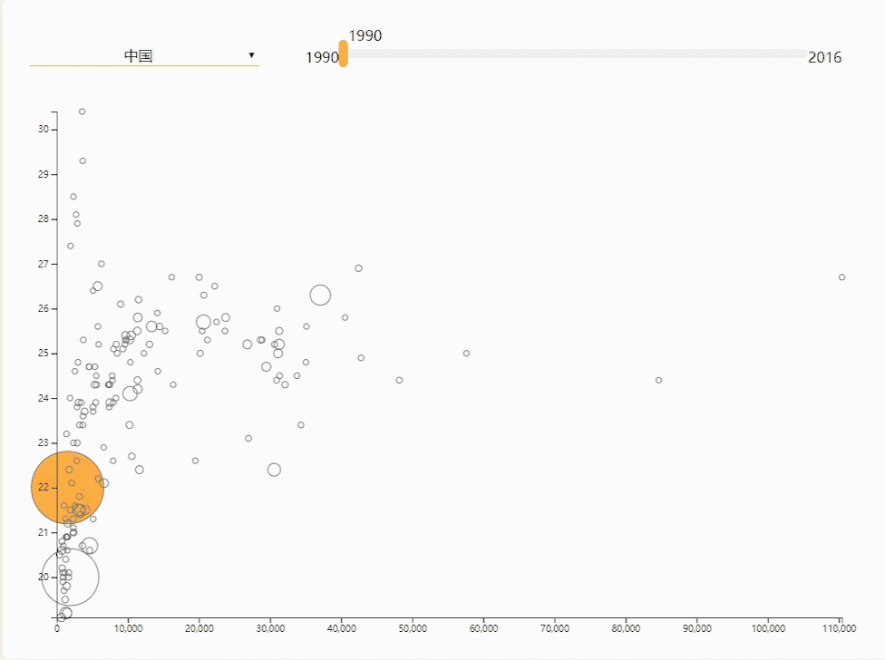
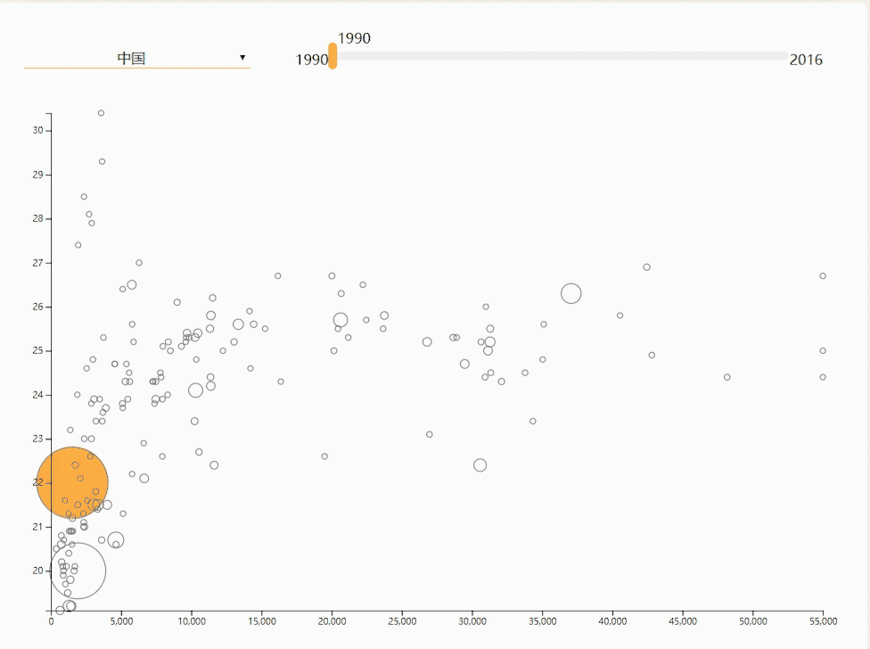
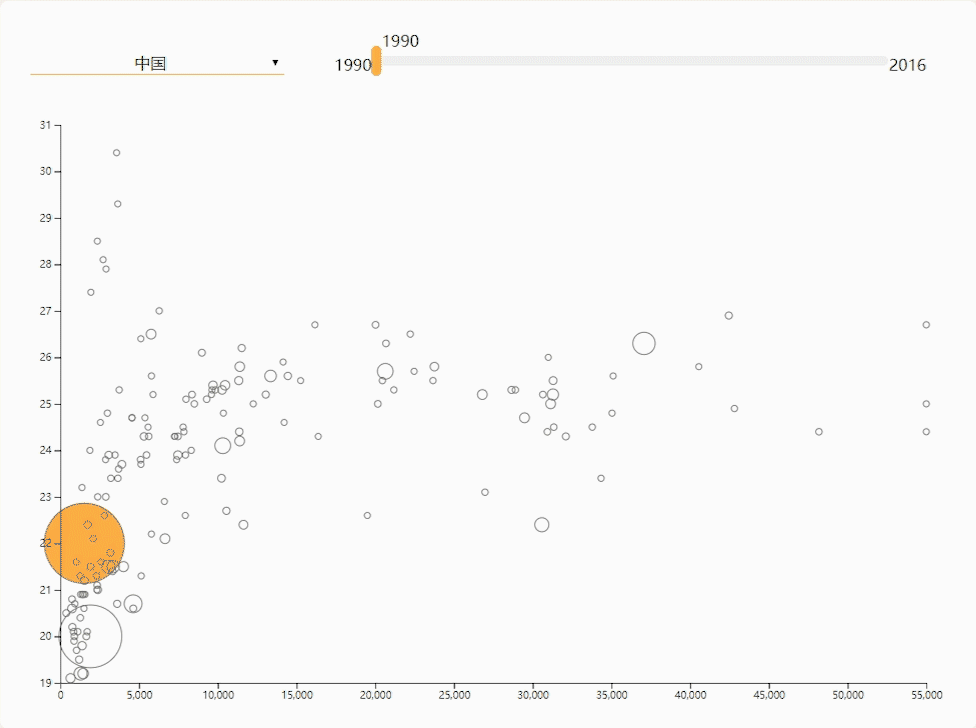

随着时代的发展，人们开始越来越关注自身的健康问题，在中国，已经出现许多保温杯里泡枸杞的“90后”养生群体，甚至有人拿出自己一半的工资去养生，为得就是让自己的身体更健康、老得更慢一点。而我们身处于“凌晨4点的网新班”，时常会因为灵感问题或拖延症熬着长夜，午夜还在线上和同学们握手问好。作为切身体会者，我们清楚地知道：身体是革命的本钱，健康是永远的财富。因此我们希望做一个与身体、健康有关的选题，更贴近我们的生活，也更具有现实意义。
在把选题范围定在身体/健康问题上后，我们将“世界卫生组织”（WHO）的官网定为获取数据源的对象，并在上面搜寻感兴趣且可行度较高的主题。在搜索筛选的过程中，有关肥胖问题的一些简报和事实档案吸引了我们。简报中写道：“肥胖问题如今却在全球流行，每年至少有280万人死亡可归咎于超重或肥胖。肥胖曾被视为高收入国家的问题，而现在低收入和中等收入国家也广泛存在这一问题。”我们了解到，超重和肥胖已经成为全球死亡率和慢性病病发率持续增高的重要因素之一，并且大大提高了成年人心血管疾病和癌症的风险。与肥胖相关联的疾病数不胜数，目前因肥胖所引起的疾病有五大类，其中三种都有致死的风险。
肥胖作为一个十分贴近我们生活的问题，理应受到更多的重视。因此我们选择通过对全球BMI指数变化趋势的可视化，意在用可视化的方式展现全球各国在不同年份的BMI指数情况，从而表现出当今全球肥胖问题的严重程度，引起人们对肥胖问题的重视。
为了能更好地呈现出全世界各国BMI的总趋势，我们选择将WHO官网上分性别的数据进行合并处理，从而让观者可以直观地看到每个国家的整体情况，而非只是某一单一性别，从而更好地呈现出肥胖问题的严重程度。
在制作“全球BMI与人均GDP的关系”一图中，如果不对数据进行任何处理的话，会是下图这个样子。
可以看到，尽管图表能准确得反映各国数据间的比例关系，但由于部分国家有着非常大的人均GDP，导致大多数国家的泡泡都挤在一块，可读性非常差。因此我们做了一个取舍，对X轴设置了一个上限，超过人均5万5千国际元的国家会直接顶在图表的最右侧，如下图。
同时我们也对Y轴进行了一定的处理。默认情况下，Y轴的刻度是会随着数据范围变化的，这样可以充分地利用画面空间。但我们希望更好地体现出各国年度间的变化，于是人为固定了五个数据类别的值域（固定的值域可以显示年度变化），在尽可能呈现较多数据的同时（要求值域尽可能大），最大化利用画面空间（要求值域尽可能小）。页面最终效果如下图所示。
在衡量GDP时，有很多种不同的单位。由于美元的汇率随时间有所波动，这样不同的标准不利于直观地反映各国BMI均值与人均GDP的关系。因此为了能让该指标更好地反映出经济对肥胖的影响，我们选择采用以2011年不变国际元为单位的GDP（PPP）。同时由于基于PPP（人均购买力）的人均GDP数据从1990年才开始存在，因此我们再次对数据进行了取舍，在第二个界面选择呈现1990-2016年的数据情况。
作业相关的源代码已经放在组员的GitHub上了。这一份展示Demo也是承载在GitHub上的。